自动化测试
本文主要记录自动化测试的常用操作及一些有趣的用法
web自动化环境安装：Java、selenium、webdriver
下文将进行详细介绍
selenium自动化测试
第一段代码
第一段代码：from selenium import webdriver
import time
browser=webdriver.Chrome()
browser.get("https://www.taobao.com/")
time.sleep(1)
browser.find_element_by_link_text("登录").click()
browser.quit()
浏览器常用操作
| 操作名称 | 操作方法 | 操作说明 |
|---|---|---|
| 浏览器最大化 | maximize_window() | 在统一的浏览器大小下运行用例，可以比较容易的跟一些基于图像比对的工具进行结合， 提高测试的灵活性和普遍适用性 |
| 设置浏览器宽、高 | set_window_size(480,800) | |
| 控制浏览器前进 | forward（） | |
| 控制浏览器后退 | back（） | |
| 刷新浏览器 | refresh（） | |
| 打开一个网站 | get（"https://www.taobao.com/") | |
| 关闭当前标签页 | close（） | |
| 关闭浏览器全部标签页 | quit（） | |
| 获取当前窗口所有句柄 | current_window_handle |
元素定位
元素定位的意义：在网站页面中，我们都会有输入框、按钮、文字链接，当然还有图片、页面底部的文字以及左侧的下拉框等，自动化要做的就是 模拟键盘和鼠标来操作这些元素，或点击、或输入、或鼠标悬停等
操作这些元素的前提是需要找到它们，自动化测试工具无法像测试员一样可以通过肉眼来分辨页面上的元素，所以我们 就需要定位到这些元素，才能够进行操作
常用的页面元素定位| 常用定位对象的元素 | 定位对象的方法 |
|---|---|
| id | find_element_by_id() |
| name | find_element_by_name |
| class name | find_element_by_class_name |
| tag name | find_element_by_tag_name |
| link text | find_element_by_link_text |
| xpath | find_element_by_xpath |
| css selector | find_element_by_css_selector |
鼠标事件
在实际的web测试中，有关鼠标的操作，不单单只有单击，有时候还要用到右击，双击、拖动等操作， 这些操作包含在actionchains类中
| 方法 | 操作 |
|---|---|
| context_click() | 右击 |
| double_click() | 双击 |
| drag_and_drop() | 拖动 |
| move_to_element() | 鼠标悬停在一个元素上 |
| click_and_hold() | 按下鼠标左键在一个元素上 |
键盘事件
在测试时有时候需要将焦点转移到下一个元素，用于验证元素的排序是否正确，webdriver的keys类 提供键盘上所有按键的操作，如ctrl+A、ctrl+V/ctrl+C等，在某些更复杂的情况下，还会出现使用send_keys来模拟上下键操作 下拉列表的情况
| 方法 | 操作 |
|---|---|
| send_keys(Keys.BACK_SPACE) | 删除键 |
| send_keys(Keys.SPACE) | 空格键 |
| send_keys(Keys.TAB) | 制表键 |
| send_keys(Keys.ESCAPE) | 回退键 |
| send_keys(Keys.ENTER) | 回车键 |
| send_keys(Keys.CONTROL,'a') | 全选 |
| send_keys(Keys.CONTROL,'c') | 复制 |
| send_keys(Keys.CONTROL,'v') | 粘贴 |
| send_keys(Keys.CONTROL,'x') | 剪切 |
等待时间
1.为什么要设置等待时间当浏览器加载页面的时候，页面上的元素可能并不是同时加载完成的，这给元素定位增加了困难，所以为了保证脚本运行的稳定性， 需要脚本中添加等待时间
2.休眠方法:sleep() 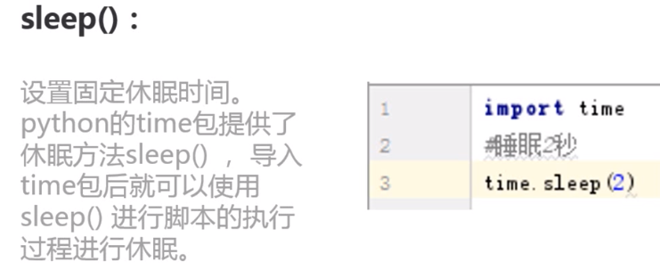 3.隐式等待:implicitly_wait() 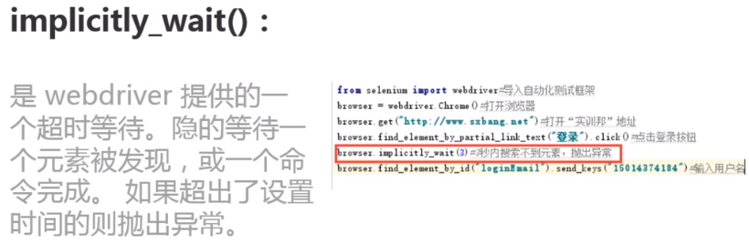 4.显式等待：WebDriverWait() 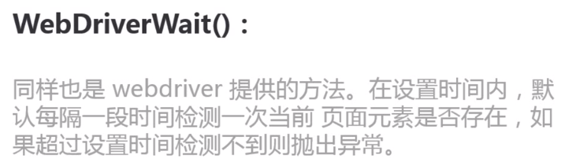脚本模块化
 定义方法：
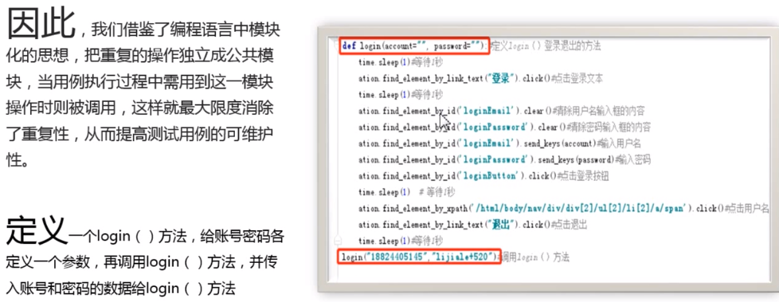
定义方法：
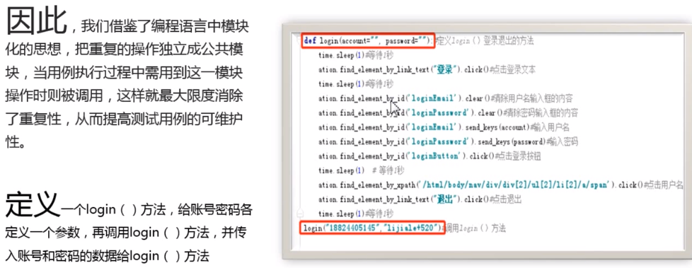
异常处理
在脚本开发过程中，需要用到python的异常处理来捕捉异常和抛异常
异常的抛出机制：1.如果再运行时发生异常，python解释器会自动的在出错的地方生成一个异常对象
2.python解释器会自动的在出错地方的附近寻找有没有对这个异常对象处理的代码，也就是try...except语句，
如果没有，python解释器会自动的将这个异常对象抛给其调用函数，就这样层层抛出
3.如果再最外层（全局'main'）还是没有找到的话，解释器就会退出，同时打印出traceback以便让用户找到错误产生的原因
注意：虽然大多数错误会导致异常，但一个异常不一定代表错误，有时候它们只是一个警告， 有时候它们可能是一个终止信号，比如退出循环等
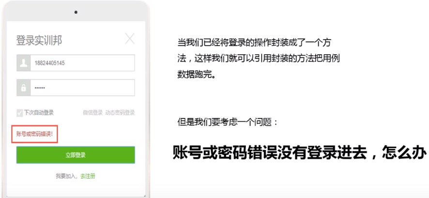 出现异常时，会终止测试用例的执行，使用try...except 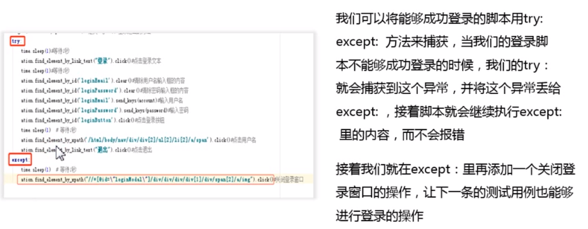 python中常见的异常：| 异常 | 描述 |
|---|---|
| BassException | 新的所有异常类的基类 |
| AssertionError | assert语句失败 |
| TypeError | 传入的对象类型与要求不符 |
| NameError | 使用一个还未赋值对象的变量 |
| SyntaxError | 当解析器遇到一个语法错误时引发 |
| FileNotFoundError | 试图打开一个不存在的文件或目录 |
| AttributeError | 试图访问的对象没有属性 |
| IndexError | 当一个序列超出了范围 |
| ImportError | 无法导入模块或包 |
用例数据分离
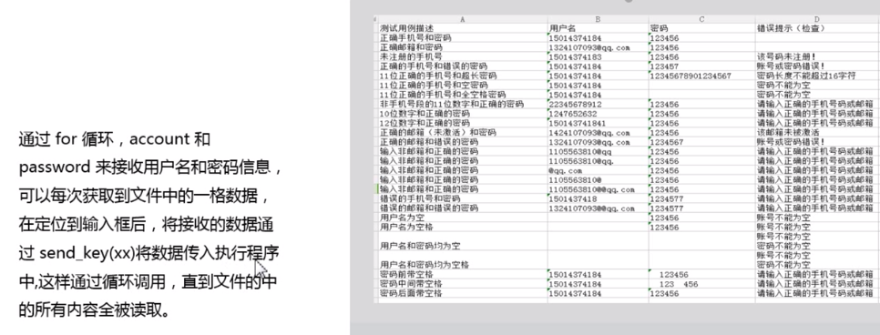 通过循环获取数据 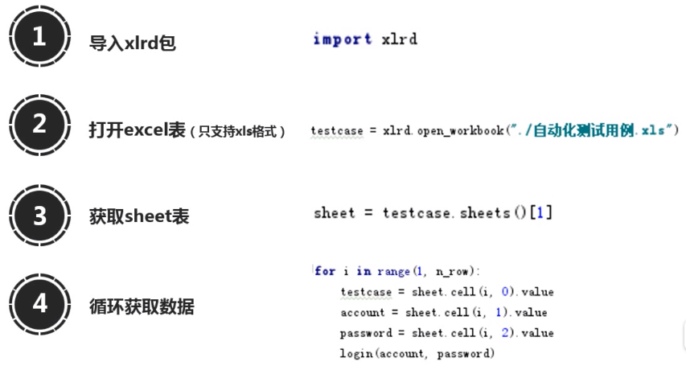 操作实例： 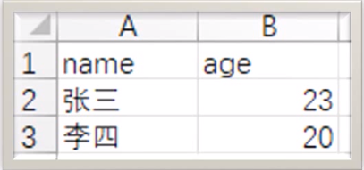 代码：import xlrd
testcase=xlrd.open_workbook('/测试表格')#表格放在了根目录
sheet=testcase.sheets()[0]#测试用例在sheet1中
name=sheet.cell(1,0).value
age=sheet.cell(1,1).value
print(name,age)
excel表常用操作： 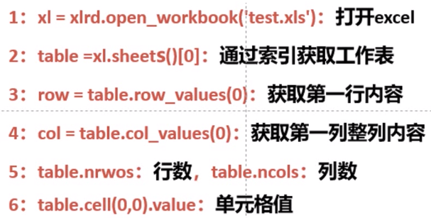
输出测试结果
导入docx包：import docx
打开word文档：dox=docx.Document()
获取错误提示：dox.add_paragraph.add_run("登录失败-错误信息为："+action.find_element_by_class_id ("logintip").text+""+action.find_element_by_class_id("loginEmail-error").text+""+ action.find_element_by_class_id(loginPassword-error).text+"/n").font.color.rgb=RGBcolor(255,0,0)
获取数据写入文档：dox.add_paragraph（"当执行到第"+str（i）+"条用例"）.add_run\
(tesstcase).font.color.rgb=RGBcolor(0,0,255)
dox.add_paragraph（"用户名：%s \n 密码：%s"%(account,password))
appium自动化测试
app自动化框架比较
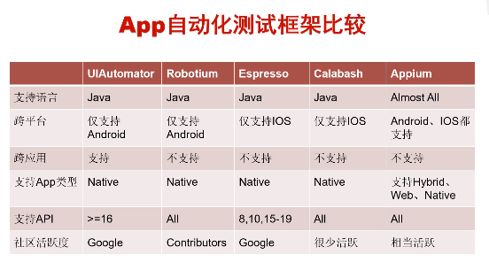环境安装
搭建appium环境之前，不妨先问自己以下几个问题：- appium环境是不是需要一个appium安装包？
- appium是node.js开发的，他的依赖是不是就是node.js的安装包？
- 针对Android进行测试，是不是需要Android的sdk？
- Android是基于java开发的，是不是需要配置java的sdk？
- 既然要做自动化，是不是需要选择安装一个开发语言Python？
- Python和appium究竟是怎么进行交互的呢？是不是需要一个第三方扩展包：appium-python-client？
- 工欲善其事必先利其器，是不是需要选择一个IDE工具，这里可以选择Pycharm或者sublime
① 安装Appium python client包
直接在命令提示窗口中 输入pip install Appium-Python-Client
另外要确保安装匹配版本的selenium和appium：可以输入pip install seelnium -U
② 安装Appium Server
方法一：node.js & npm
npm install -g appium
该方法通过命令appium判断是否启动
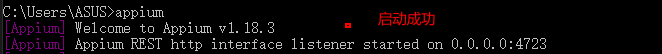 方法二：Appium Desktop（推荐）去官网下载appium-desktop 下载地址为https://github.com/appium/appium-desktop/releases/tag/v1.15.1，我们下载windows版本的。
安装成功后桌面会有用一个紫色的图标。
我们打开Appium，配置默认点击“start server”启动appium-desktop。 验证Appium所需要的各项环境都已经准备完成—— appium-doctor
- 需要先安装 cnpm ，命令为：“npm install -g cnpm --registry=https://registry.npm.taobao.org”
- 然后输入命令：cnpm install appium-doctor -g，进行 appium-doctor 的安装：
- 输入 appium-doctor，查看信息
原因：之前配置环境变量时，用的变量名为ANDROID_SDK_HOME，appium不认，改为ANDROID_HOME即可（最好关闭dos命令重启一下）
adb获取包名界面名
获取当前运行的包名：adb shell dumpsys window | findstr mCurrentFocus
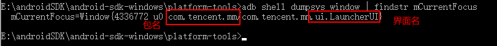 1.包名（package）：决定程序的唯一性（不是应用的名字）2.界面名（activity）：可以理解为一个界面
adb文件传输
1.从电脑传到手机
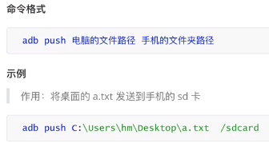2.从手机传到电脑
将手机产生的文件（数据库文件、日志文件）拉取到电脑中 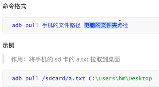adb获取app启动时间
adb shell am start -W 包名/启动名 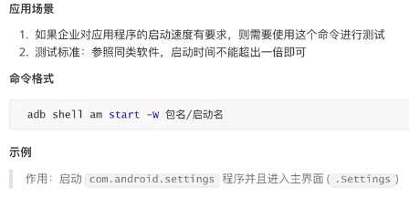 示例： 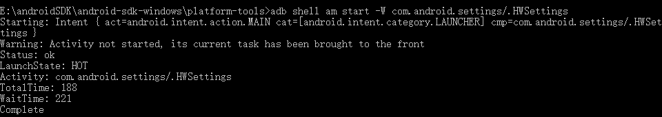 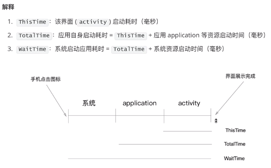adb获取手机日志
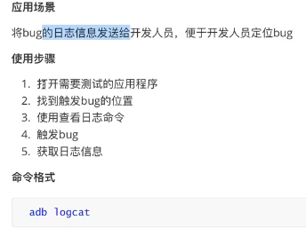 示例： 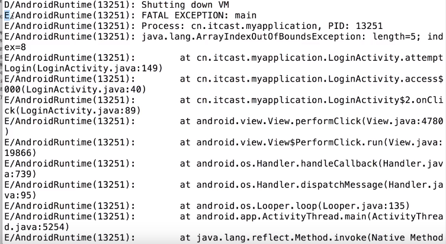 如何寻找错误日志？E开头的为error，错误一般出现在at所在的行
adb其它命令
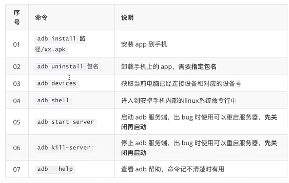appium安装
双击exe文件安装，安装成功后双击启动 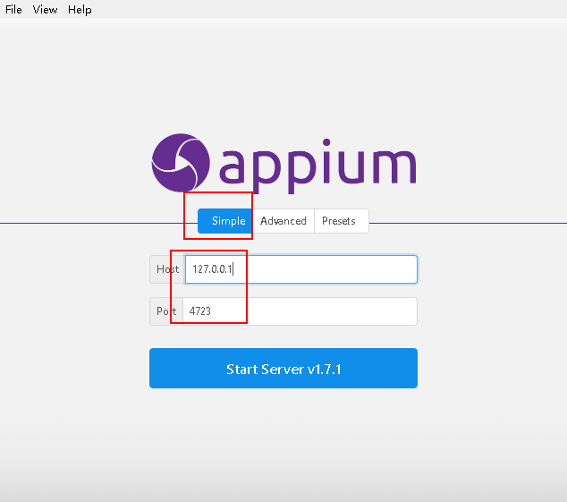相关链接：